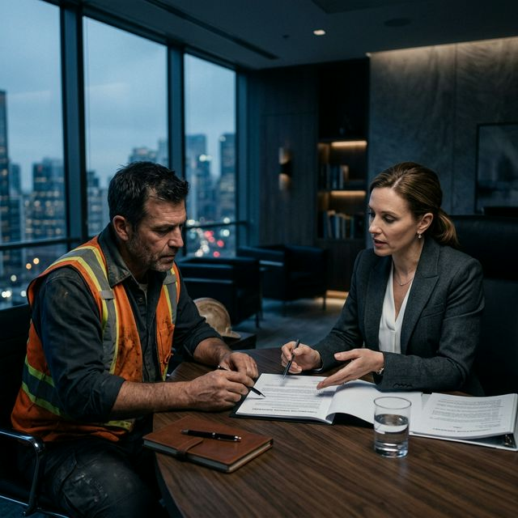

Abogados Especialistas en Derecho y Trabajo:
Representación Corporativa
Frente a contingencias vinculadas a desvinculaciones o irregularidades registrales, nuestro equipo despliega una impecable táctica de negociación y litigio. Le brindamos una representación jurídica de excelencia, garantizando estricta confidencialidad funcional y un esquema de honorarios a resultado.

Asesoramiento integral en demandas y conflictos laborales
Comprender sus derechos y obligaciones frente a su empleador o ante una Aseguradora de Riesgos del Trabajo (ART) es fundamental para evitar el cobro de indemnizaciones deficientes o liquidaciones incorrectas.
Nuestro equipo de especialistas en derecho laboral proporciona un marco de seguridad jurídica, asumiendo la dirección técnica legal de su reclamo. Evaluamos cada caso con estricto rigor para exigir el cumplimiento de la normativa laboral vigente y proteger sus intereses patrimoniales.
¿En qué podemos ayudarle?
- Accidentes de Trabajo y Enfermedades Profesionales: Representación legal ante la ART y Comisiones Médicas por siniestros laborales. Intervención en caso de rechazo del accidente o alta médica prematura.
- Despidos e Indemnizaciones: Asesoramiento preventivo y representación ante despidos con o sin expresión de causa. Revisión pormenorizada de la liquidación final para asegurar la integridad del pago.
- Trabajo No Registrado (En Negro o Deficiente): Análisis e intimación legal para exigir la correcta registración laboral y, en su caso, la procedencia de las multas indemnizatorias garantizadas por la ley.
- Mobbing y Discriminación: Soporte jurídico ante situaciones que configuren hostigamiento sistemático, acoso psicológico o prácticas discriminatorias en el ámbito laboral.
- Diferencias Salariales y Horas Extras: Reclamo por omisiones de pago de horas suplementarias o liquidaciones inferiores a lo establecido por el Convenio Colectivo de Trabajo (CCT) aplicable.
¿Cuál es nuestra metodología de trabajo?
- Intercambio Telegráfico: Iniciamos el reclamo formal con el envío de las intimaciones cursadas por Carta Documento o Telegrama Laboral, fijando los cimientos de la estrategia.
- Mediación Obligatoria (SECLO/Ministerio): Promolvemos la instancia de negociación extrajudicial para propiciar un acuerdo justo, expedito y satisfactorio sin necesidad de iniciar una demanda.
- Ejecución y Pago: Al formalizar un acuerdo homologado, se controla que el efectivo cumplimiento de la obligación y la indemnización sean percibidos por el trabajador sin contratiempos.
Preguntas Frecuentes (FAQ): Derecho laboral y accidentes de trabajo en Argentina
1. Notificación formal: Comenzamos con el envío de telegramas intimatorios y el diseño de la estrategia legal.
2. Mediación Laboral (SECLO/Ministerio): Buscamos resolver el conflicto mediante una negociación extrajudicial para alcanzar un acuerdo justo y rápido sin necesidad de ir a juicio.
3. Pago de indemnización: Al lograr un acuerdo, se firma el convenio y recibes tu liquidación. Si la empresa no cede, se procede a iniciar el juicio laboral.
Su tranquilidad y sus derechos no son negociables.
No deje que el tiempo pase; en el derecho laboral, los plazos para reclamar son estrictos. Contáctenos hoy para una evaluación confidencial y gratuita.
Hablar con un abogado ahora